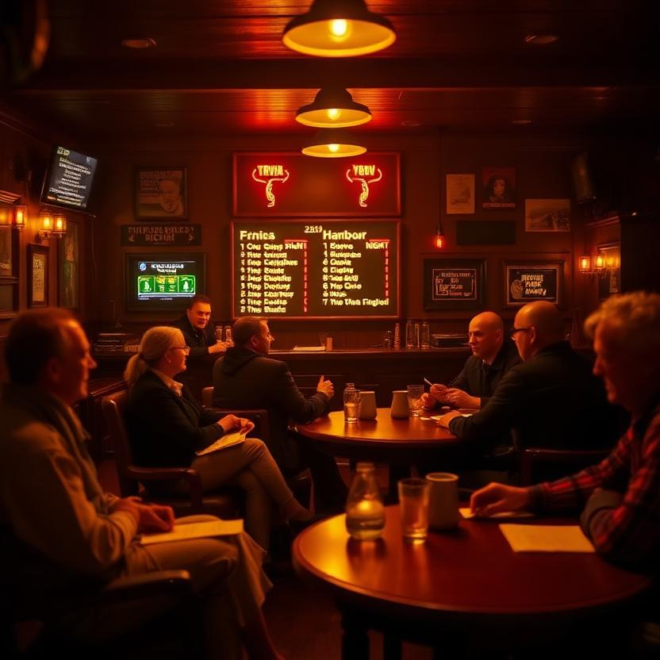
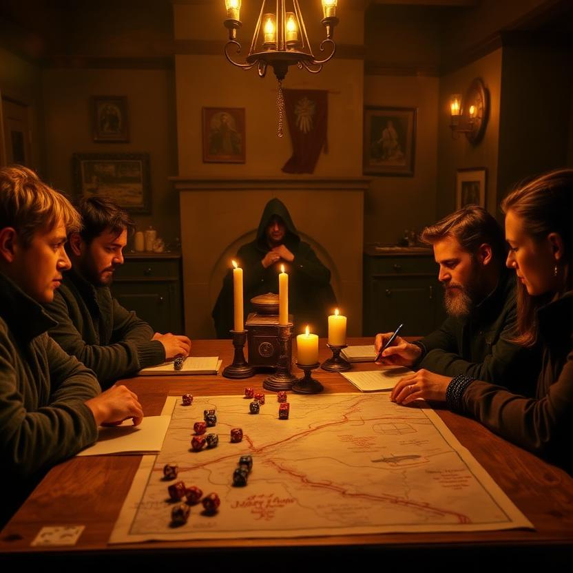
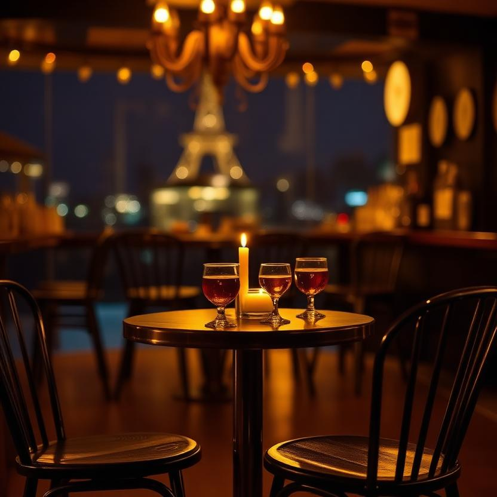

The Buzzer and the Sneer · Night 3
Trivia Night
Two teams, a host with question cards, a glowing scoreboard. Cynicism spiked 0.00 → 0.50 the night a confident answer was wrong; volume spiked on the buzzer; the room ran a little cold and never fully recovered.
4 cloud · 1 vision · 4 local voices

The Fogbound Harbor One-Shot · Night 4
TTRPG Night
A gamemaster behind a screen, four players at a candlelit table, dice and a hand-drawn map. Panic spikes on the tense roll; mood and joke_landing spike on the nat-20; earnestness carries the quiet close.
4 cloud · 1 vision · 4 local voices

The Same Room, Read Differently · Night 5
Singles Night
A small round table, two drinks, two candles. A warm but nervous room. Every agent's Personal-Elephant reads the same room differently — the chemistry is the observable.
4 cloud · 1 vision · 4 local voices